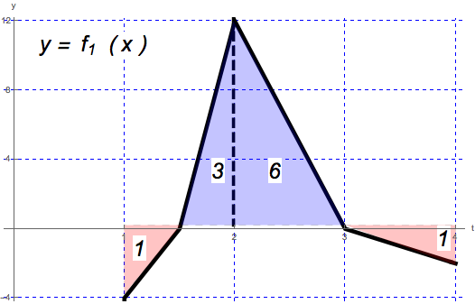
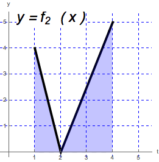

\[ \int _1^4 f(x)\d x = 7 \qquad \int _2^4 f(x)\d x = 5 \qquad \int _1^4 g(x)\d x = 2 \]
Compute the following integrals, if possible. If it is not possible, give examples
explaining why not.
- (a)
- \(\int _1^4 (8f(x) - 7g(x))\d x \)
- (b)
- \(\int _1^2 (-f(x)) \d x \) First notice that\begin{equation*} \int _1^4 f(x) \d x = \int _1^2 f(x) \d x + \int _2^4 f(x) \d x \end{equation*}Therefore,\begin{equation*} \int _1^4 f(x) \d x- \int _2^4 f(x) \d x = \int _1^2 f(x) \d x \end{equation*}
So
\begin{align*} \int _1^2 (-f(x)) \d x &= - \int _1^2 f(x) \d x \\ &= - \left ( \int _1^4 f(x)\d x - \int _2^4 f(x)\d x \right ) \\ &= - (7 - 5) = -2. \end{align*} - (c)
- \(\int _1^4 \left | f(x) \right | \d x\) We are not given enough information to solve this integral because we do not know the regions where \(f\) is positive or negative. Consider the following two functions \(f_1(x)\) and \(f_2(x)\):


Just using geometry, one can check that
\[ \int _1^4 f_1(x)\d x = 7 \qquad \int _2^4 f_1(x)\d x = 5 \qquad \int _1^4 f_2(x)\d x = 7 \qquad \int _2^4 f_2(x)\d x = 5 \]and so both \(f_1\) and \(f_2\) satisfy the assumptions of \(f\). But notice that\[\int _1^4 \left | f_1(x) \right | \d x =11 \qquad \text {and} \qquad \int _1^4 \left | f_2(x) \right | \d x = 7 \]These two examples demonstrate that we were not given enough information to solve this problem. - (d)
- \(\int _1^4 \left ( 2 - x + f(x) \right ) \d x\) First notice that since the integral is linear over addition:\begin{equation}\label {3d} \int _1^4 \left ( 2 - x + f(x) \right ) \d x = \int _1^4 2 \d x - \int _1^4 x \d x + \int _1^4 f(x) \d x = \int _1^4 2 \d x - \int _1^4 x \d x + 7. \end{equation}By using geometry, we can see that\begin{equation*} \int _1^4 2 \d x = 2(4-1) = 6 \end{equation*}\begin{equation*} \int _1^4 x \d x = 1(4-1) + \frac {1}{2} (4-1)(4-1) = 3 + \frac {9}{2} = \frac {15}{2}. \end{equation*}Then substituting into equation (3d) gives:\begin{equation*} \int _1^4 \left ( 2 - x + f(x) \right ) \d x = 6 - \frac {15}{2} + 7 = \frac {11}{2}. \end{equation*}